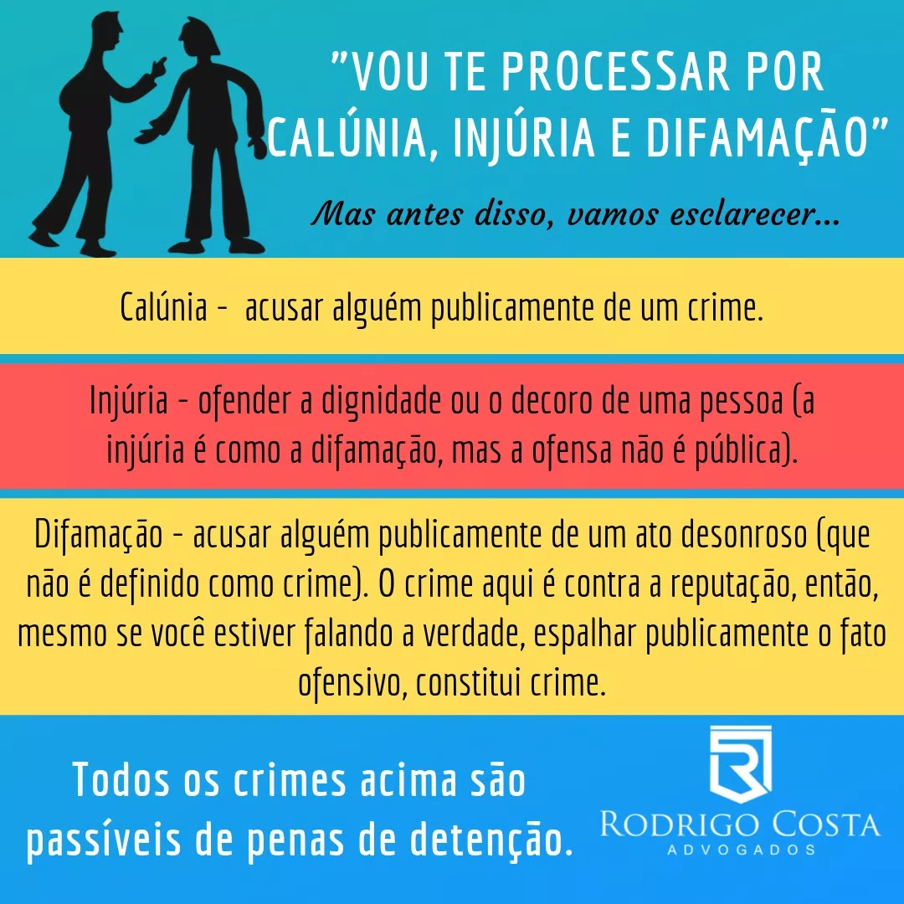

Calúnia, difamação e injúria: entenda a diferença e tudo sobre os crimes
Calúnia, injúria e difamação são três crimes contra a honra que, embora pareçam a mesma coisa, têm definições diferentes.
Quando alguém nos acusa e ofende, seja em público ou particular, é muito comum termos a seguinte reação: “vou te processar!”. Sim, faz todo sentido reagirmos dessa maneira, ou porque fomos tomados pelo instinto justiceiro, ou porque ouvimos alguma vez na vida que calúnia, difamação e injúria são crimes contra a honra.
O fato, aqui, é que palavras têm poder, e proferi-las de forma ofensiva e acusatória a alguém pode não só ferir a pessoa, como também o Código Penal Brasileiro, que é taxativo quanto às penalidades aplicadas a quem ousar diminuir alguém. Dito isso, esclareceremos, neste artigo, os três tipos de crimes contra a honra e tudo que você precisa saber sobre eles, definindo, exemplificando e ilustrando ponto por ponto.
O que são crimes contra a honra?
A honra é um direito fundamental do cidadão. Por certo, tamanha é a relevância desse bem jurídico que o legislador se preocupou em separar um capítulo no Código Penal somente para protegê-la, tipificando condutas que asseguram sua integridade.
Mas afinal, o que é honra? A honra, a saber, é um conjunto de atributos morais, físicos e intelectuais que fazem da pessoa merecedora de respeito para si e para sua comunidade. Em princípio, tal honra pode ser classificada em objetiva e subjetiva. Esta, é a autoestima, o amor-próprio, o conceito que a pessoa tem de si mesmo, aquilo que ela acredita sobre seus atributos; aquela, é a reputação, a fama, o conceito que a sociedade tem do indivíduo, aquilo que terceiros acreditam sobre seus atributos.
Assim sendo, os crimes contra a honra estão elencados no Capítulo V, do Código Penal. Hoje, trataremos de cada um deles: calúnia, difamação e injúria.
O que é Calúnia: definição
A calúnia diz respeito à honra objetiva da pessoa, ou seja, aquilo que terceiros pensam a seu respeito. O crime consiste em imputar (acusar) um fato sobre alguém, fato esse criminoso – que esteja previsto no Código Penal ou em alguma lei esparsa como crime. Dos 3 crimes contra a honra, a calúnia é a mais grave, uma vez que imputa falsamente à pessoa um crime que ela não cometeu. Vejamos o que diz a Lei:
Calúnia
"Art. 138 – Caluniar alguém, imputando-lhe falsamente fato definido como crime.Pena – detenção, de seis meses a dois anos, e multa."
A difamação tem como requisitos:
- ∴ Ação de um fato que seja desonroso – e não criminoso;
- ∴ Ofensa dirigida a determinada pessoa;
- ∴ Deve haver a intenção de ofender.
O que é injúria: definição
A injúria, diferentemente da calúnia e da difamação, tutela a honra subjetiva do indivíduo, que é aquilo que a própria vítima pensa sobre si, ou seja, sobre seus atributos morais, físicos e intelectuais. Esta é a primeira diferença. A segunda, a saber, é que na injúria não há imputação de fato algum, e sim de uma característica negativa sobre alguém. Se enquadram aqui xingamentos ou palavras negativas, que insultam e afetam a autoestima da vítima. Sendo assim, o Direito Penal protege o amor próprio de cada um também:
Injúria
"Art. 140 – Injuriar alguém, ofendendo-lhe a dignidade ou o decoro.Pena – detenção, de um a seis meses, ou multa."
Visto isso, é bem provável que você esteja se perguntando qual a diferença entre dignidade e decoro. A dignidade, a saber, é a ofensa sobre os atributos morais de alguém. Então, chamar uma pessoa de “ladrão”, “corrupto” ou “mentiroso”, por exemplo, é cometer injúria, já que são características contrárias ao que ela acredita possuir e abala a sua autoestima; já o decoro, faz menção aos atributos físicos e intelectuais de alguém. Então seria, por exemplo, chamar um indivíduo de “baleia”, “loira burra” ou “feia”. Tudo isso ofende pessoalmente a vítima e o injuriador pode ficar de 1 a 6 meses detento e ter que pagar multa.
Assim, podemos concluir que a injúria tem como requisitos:
- ∴ Imputação de uma característica negativa;
- ∴ Ofensa dirigida a determinada pessoa;
- ∴ Deve haver a intenção de ofender.
Diferenças entre calúnia, difamação e injúria
Dá vontade mesmo de trocar a ordem para calúnia, injúria e difamação, sai bem mais fluido. Mas, é proposital. Calúnia e difamação ficam lado a lado porque ambas narram um fato de maneira acusatória e atingem a honra objetiva do indivíduo (reputação da pessoa perante a sociedade). A diferença é que, enquanto a calúnia narra um crime, a difamação narra apenas um ato desonroso. Mas, as duas narram. Por outro lado, a injúria fica separada pois, ao contrário das demais, atinge a honra subjetiva do indivíduo (sua dignidade pessoal) e não narra fato algum.
Em outras palavras, atente para os exemplos a seguir:
- CALÚNIA: acusar alguém de algo criminoso, ferindo sua reputação perante a sociedade.
Exemplo:
"Vi João no ônibus, parado atrás de uma mulher e ele estava abusando sexualmente dela."
Veja, o sujeito está narrando um fato criminoso sobre João, já que
importunação sexual é crime e gera pena de até 5 anos de prisão.
- DIFAMAÇÃO: acusar alguém de algo desonroso (não criminoso), ferindo sua reputação perante a sociedade. É a famosa “fofoca”.
Exemplo:
"Vi Joaquim no restaurante com uma mulher que não era sua esposa."
Perceba. O sujeito, aqui, está também narrando um fato, mas dessa vez não criminoso, apenas desonroso, já que adultério não é mais crime desde 2005.
- INJÚRIA: ofender alguém com palavras de baixo calão ferindo seu respeito pessoal. É o famoso “xingamento”.
Exemplo:
"Você é agressor”,”você é mentiroso”, “você é estuprador”, “você é adúltero".
Repare. O sujeito, dessa vez, não está narrando fato algum, apenas ofendendo a honra pessoal do outro o reduzindo a uma característica pejorativa.

Fui vítima de calúnia, difamação ou injúria. Posso processar?
A resposta para esta pergunta é: não só pode como deve! Quem se sentir caluniado, difamado ou injuriado pode pedir ajuda na justiça. O primeiro passo a ser dado pela vítima é dirigir-se a uma delegacia e fazer um registro de ocorrência (queixa-crime). Nessa circunstância, será aberto um inquérito policial, que se manifesta como uma investigação dos fatos e provas apresentados pela vítima e que tem como fim o encaminhamento ou não da denúncia pelo Ministério Público. Havendo a recepção dessa denúncia pela justiça, inicia-se o trâmite processual, em que um oficial de justiça notifica a outra parte que está sendo aberto um processo judicial contra ela .
Em seguida, entra a figura do Advogado Criminalista, especialista em Direito Penal que representa o réu em todo o processo, defendendo-o por meio de provas, dispositivos legais e experiência em casos de crime contra a honra.